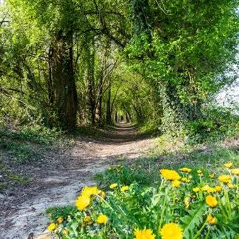

sab 31 ott · dalle 10:00
XXIII^ Giornata Nazionale del Trekking Urbano-Porcia
Il tracciato si snoda immerso in una suggestiva galleria verdeggiante che costeggia il fiume Noncello. Questo sentiero è un invito a riconnettersi con l’essenza stessa del territorio attraverso la riscoperta dei suoi elementi chiave: lo scorrere vibrante dell’acqua, il caldo…
 Indicazioni
Indicazioni
- Costi e prenotazioni
- Costo non indicato · Prenotazione non indicata
- Programma
- Programma da verificare. Apri la fonte ufficiale per orari e possibili aggiornamenti.
- In caso di maltempo
- Nessuna indicazione specifica pubblicata.
- Note
- Acquisito automaticamente dalla fonte.
L’EVENTO
Descrizione completa
Il tracciato si snoda immerso in una suggestiva galleria verdeggiante che costeggia il fiume Noncello. Questo sentiero è un invito a riconnettersi con l’essenza stessa del territorio attraverso la riscoperta dei suoi elementi chiave: lo scorrere vibrante dell’acqua, il caldo profumo del legno, il silenzio operoso della natura e delle tradizioni custodite nel borgo.
L’itinerario guida all’ascolto profondo di suoni incontaminati, offrendo un’occasione unica per isolarsi dalla frenesia della routine. Un viaggio rigenerante per staccare dal caos quotidiano che, passo dopo passo, diventa un’esperienza sensoriale dove ritrovare la calma interiore, lasciandosi meravigliare dalla bellezza nascosta e dai dettagli più autentici del paesaggio. INFO PERCORSO
Tempo di percorrenza: 1 ora e 30 minuti circa
Lunghezza: Km 3,5
Difficoltà: Bassa Punto di partenza:
Porcia, via Rondover - davanti alla Chiesa di Sant’Antonio Orario di partenza:
ore 10:00
ore 15:00
La prenotazione è obbligatoria e la visita guidata è gratuita.
Si raccomanda di indossare scarpe comode. INFORMAZIONI:
A.P.S. Pro Loco ProPorcia
Tel. 320 8433046/ info@proporcia.it www.proporcia.it
www.visitporcia.it
IL PROGRAMMA
Programma e orari
Appuntamenti raccolti dalle fonti elencate. Dove manca un orario, non è ancora disponibile in questa scheda.
Programma pubblicato
- ore 10:00
- ore 15:00
INFORMAZIONI UTILI
Prima di partire
- Controllare la fonte prima di partire.
ORGANIZZAZIONE